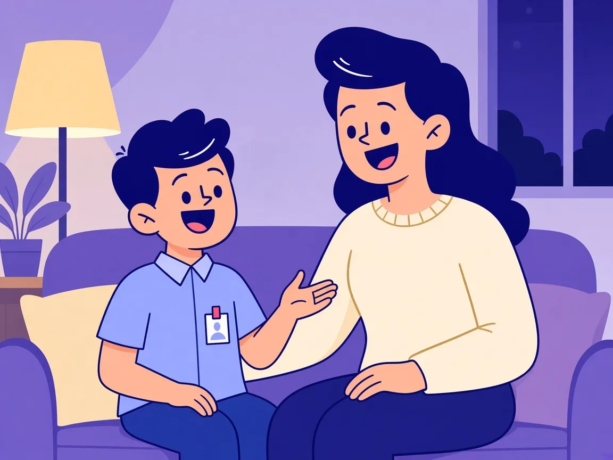
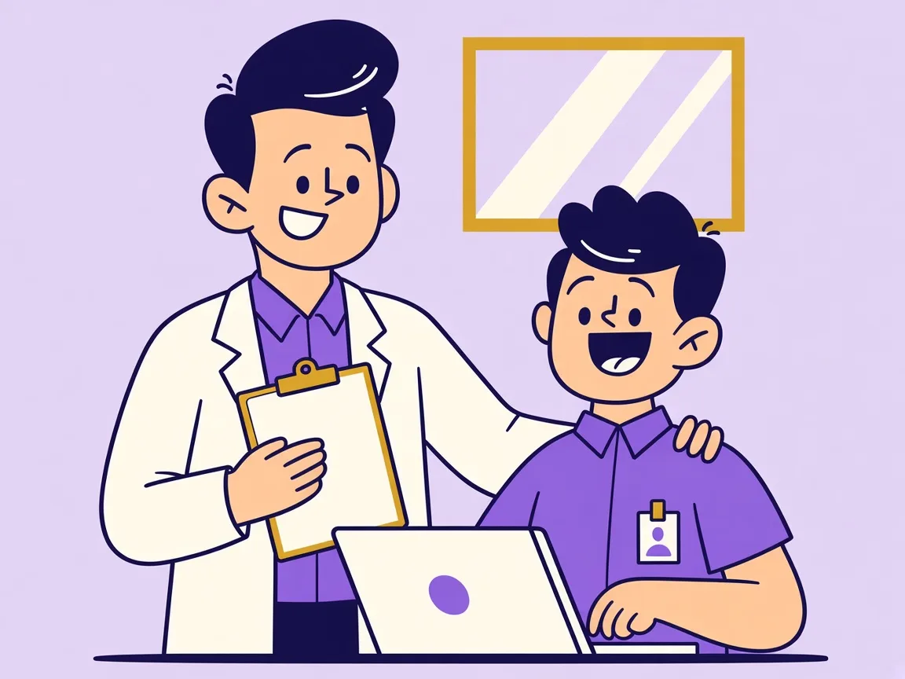

At school
Teachers notice the signs
Fatigue, attention shifts, posture, or behaviour often appear in class first.
The value for your school
Academic results record the work. They do not always show the health side of the day that made the work possible. Second Bell gives school leadership a clearer, earlier view of that side.
Outcomes leadership can use
Help identify potential health and wellbeing concerns that may otherwise go unnoticed.
Look beyond academic results to factors that affect attention, energy, participation, and comfort.
Combine appropriate screening with education, and recommendations for further assessment when needed.
Help teachers recognise possible concerns, without expecting them to diagnose health conditions.
Give school leadership relevant wellbeing insights to guide appropriate next steps.
Activities are planned around the existing timetable, with minimal administrative work. Leadership stays in control.
The gap Second Bell closes
Left apart, those three true signals arrive too late. Second Bell holds them as one picture for the school.
At school
Fatigue, attention shifts, posture, or behaviour often appear in class first.

At home
Sleep, mood, and energy may shift at home long before a report card makes the pattern clear.

Health assessment
Qualified professionals can recommend what should happen next when a concern needs attention.